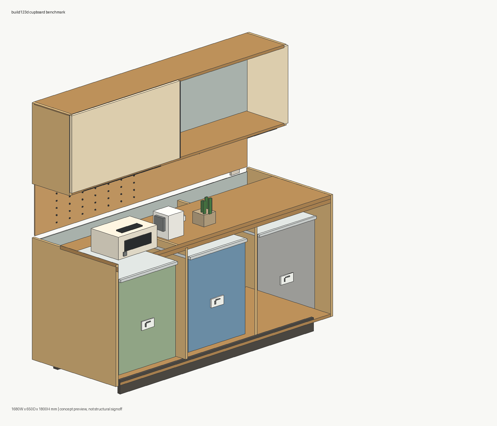
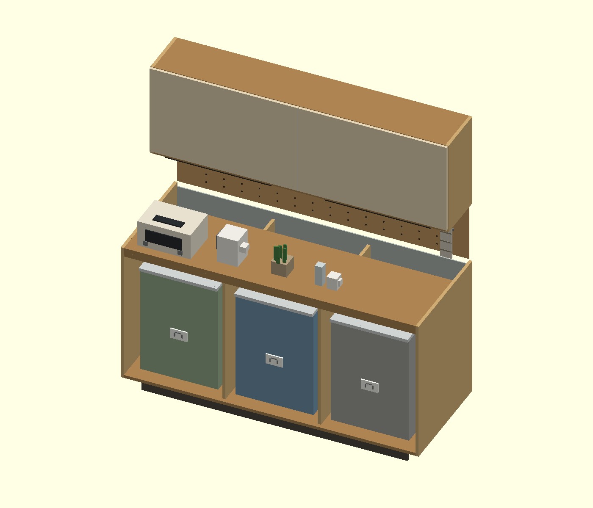
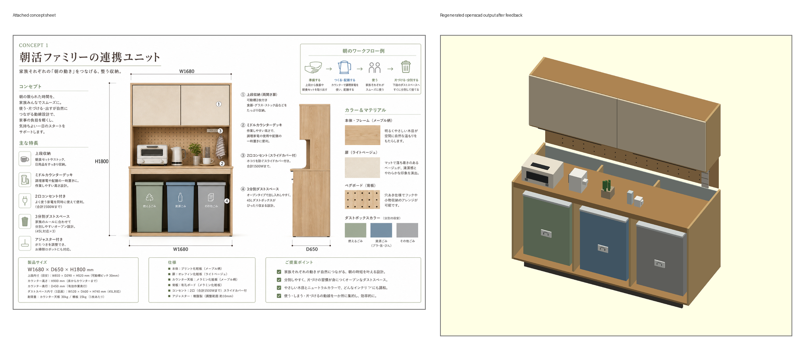
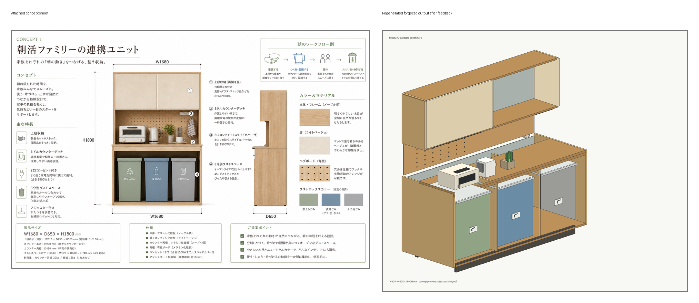
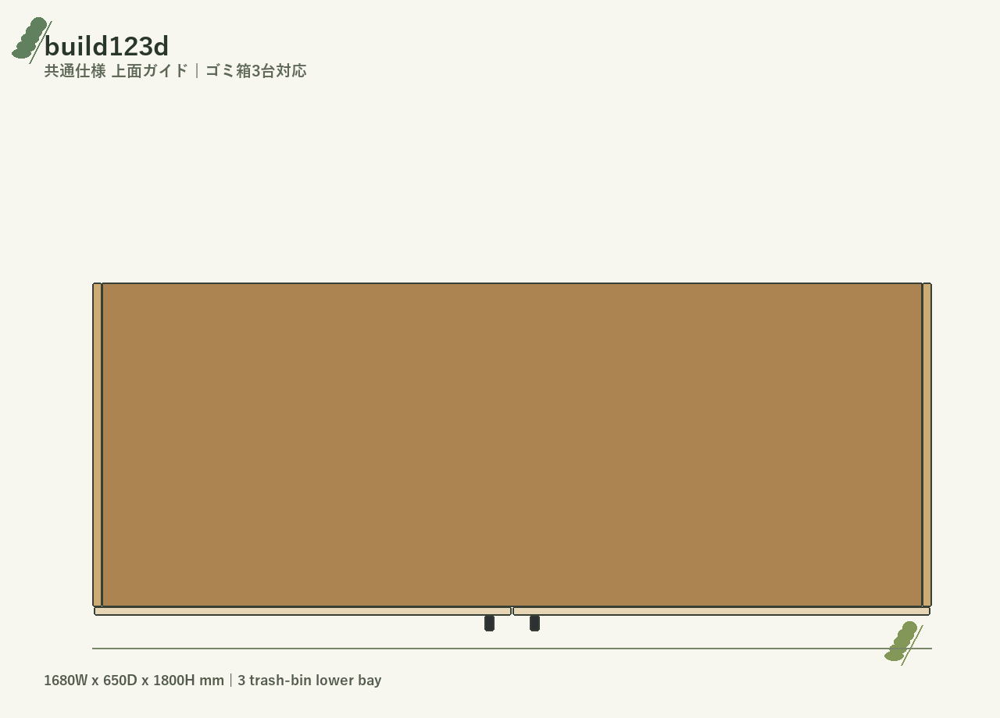
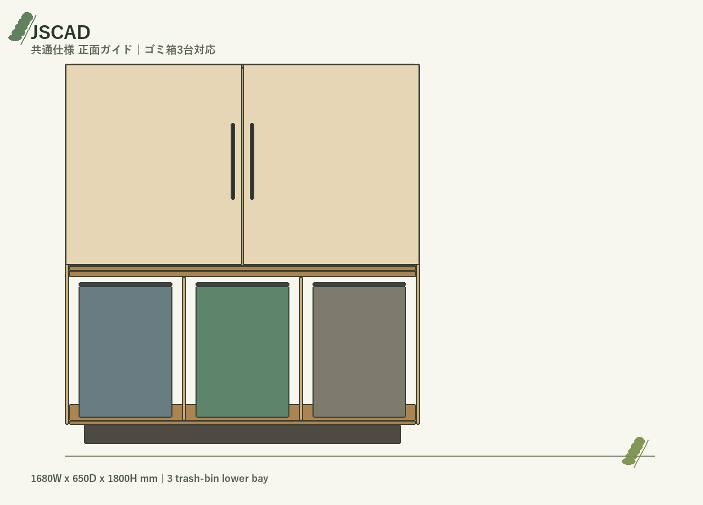
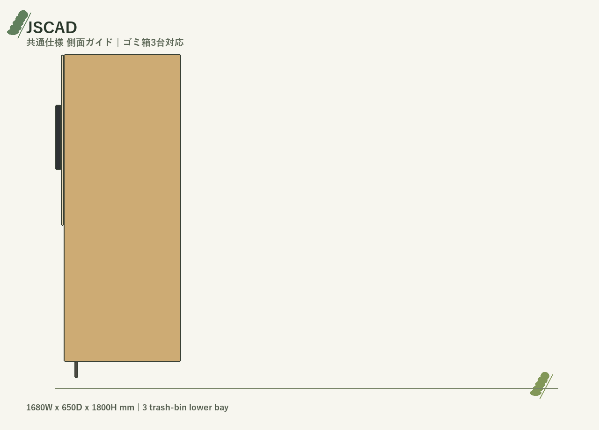
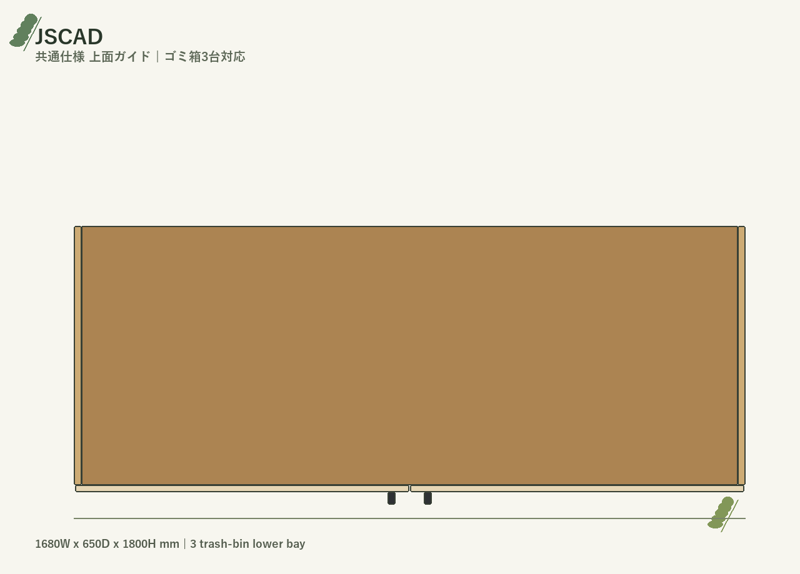
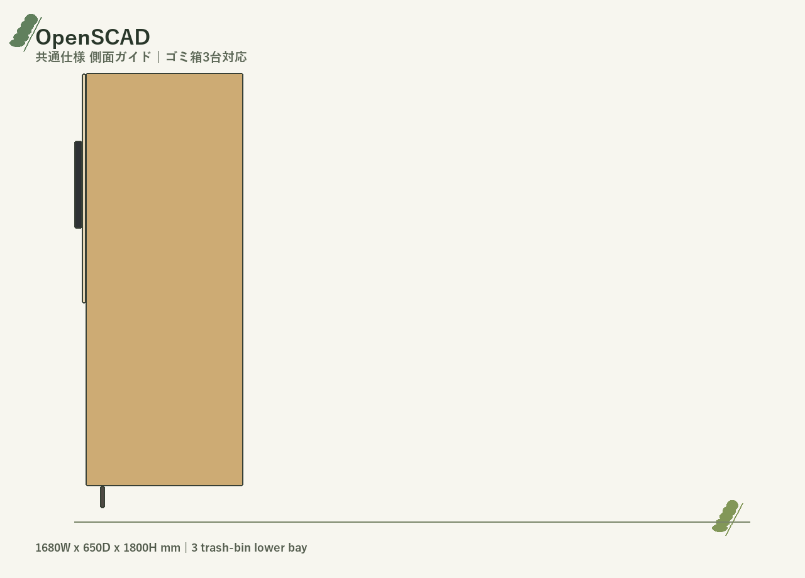
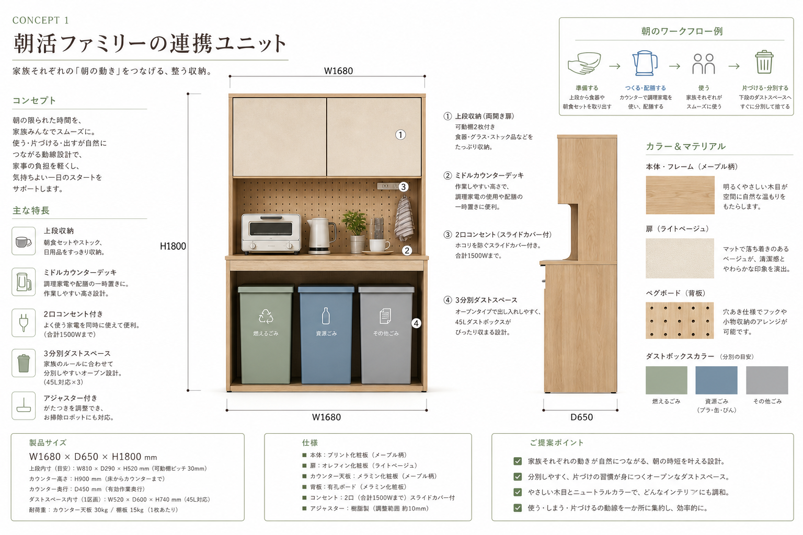

添付コンセプトシートを基準に再生成
朝活ファミリーの連携ユニット CAD再検証
旧動画の甘い評価をやめ、厳密な採点・背面位置の再確認・添付画像の表示を入れて作り直しました。
1680
mm 幅
650
mm 奥行
1800
mm 高さ

前回フィードバックの反映
見せ方も採点も、証跡ベースに戻す
高得点扱いではなく、コンセプト画像との差分と生成物の限界が見える動画にしています。コンセプトシートを基準に、生成物との比較、修正、再確認を繰り返すPDCAで調整しました。
コンセプト起点のPDCA
コンセプトシート、生成画像、concept-vs比較を見直しながら、背面位置・採点・表示内容を継続調整。
背面・奥行きの見直し
上部収納の背面位置、ペグボード、ミドルカウンターの関係を成果物画像で再確認。
旧スコアを破棄
旧動画のスコア表現を使わず、現在の `score_breakdown.csv` に合わせて表示。
限界も明示
小物・布・ラベル・曲面など、箱形プリミティブでは再現しきれない点を隠しません。
採点ルール
後付け評価ではなく、4カテゴリで積み上げる
総合点は4カテゴリ合算。内訳は layout 25 / visual 35 / CAD output 25 / evidence 15 で、減点理由をCSVとレポートに残しています。
25
layout / dimensions
35
visual / detail fidelity
25
CAD output quality
15
evidence / verification

同じ外形寸法でも、細かな金物・ラベル・布・曲面は減点対象。ここを動画内でも見せます。
STEP対応組
CadQuery / build123d は 84点。CAD出力で優位
CadQuery
84.0 B
STEPSTLOBJPNG
寸法・出力は強い一方、コンセプト画像の質感や小物表現は減点。
build123d
84.0 B

STEPSTLOBJPNG
同じくSTEP対応。見た目の再現限界はCadQueryと同じ評価。
メッシュ / CLI 組
JSCAD / OpenSCAD / ForgeCAD は 76点。生成はできるが交換形式で差が出る
JSCAD
76.0 C
STEPなしSTLOBJPNG
軽量で反復しやすいが、今回のCLIではSTEP/native exchangeなし。
OpenSCAD
76.0 C

STEPなしSTLOBJPNG
OpenSCAD 2021.01ではSTEP未生成。OBJはSTLから変換。
ForgeCAD
76.0 C
STEPはPro制約STL3MFPNG
CLI導線は魅力。ただしrender 3d timeoutとSTEP制約を明記。
コンセプト画像との直接比較
成果物だけでなく、添付画像とのズレを同じ画面で見る
CadQuery
build123d
JSCAD

OpenSCAD

ForgeCAD
正面・側面・上面の確認
背面位置と奥行きは、側面ビューも含めて確認
CadQuery
front
side
top
build123d
front
side

top
JSCAD

front

side

top
OpenSCAD
front

side
top
ForgeCAD
front
side
top
最終整理
コンセプトシートを起点に、生成物・採点・限界を一緒に残す

動画内に収録: 添付コンセプトシート、5ツールのスクリーンショット、concept-vs比較画像、正面・側面・上面ビュー。
採点: CadQuery/build123d は 84.0、JSCAD/OpenSCAD/ForgeCAD は 76.0。旧動画の高得点表示は不使用。
PDCA確認: README画像リンク、score_breakdown、report画像チェック、concept-vs比較、各CAD成果物を根拠に再構成と再確認を反復。
残る限界: 実物の質感、布の柔らかさ、細い金物、ラベル、曲面小物はCADベンチとして簡略化。